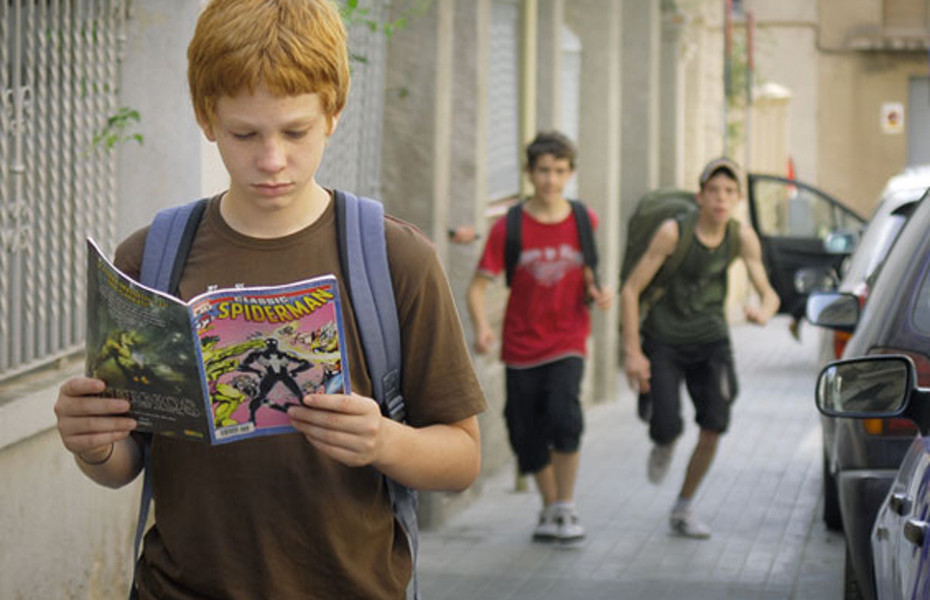

Los “bullies” pueden presentar características físicas muy variadas. Son altos, bajos, de complexión atlética, delgados… Sin embargo, en cuanto a su perfil psicológico, es posible que muchos acosadores presenten una serie de características comunes que te explicamos a continuación.
1. Necesidad de dominar y controlar a los demás Las personas acosadores suelen tener una personalidad autocrática y llevar a cabo conductas antidemocráticas. Poseen pensamiento dicotómico, así que para ellos la única opinión que cuenta es la suya. Les gusta dominar a los demás y sentirse superiores, porque generalmente tienen una autoestima baja. Es por eso que buscan víctimas "fáciles" y débiles. 2. Temperamento explosivo e impulsivo Este tipo de individuos no suelen ser emocionalmente inteligentes y no tienen un gran control emocional. No poseen habilidades de autoconocimiento y por tanta no son capaces de gestionarlas ni regularlas. Su carácter es impulsivo y suelen explotar a la mínima, dando rienda suelta a su ira.
“L: La directora agarró y me dijo que me tenía que cambiar a la tarde porque tenía miedo porque yo tenía principio de Bullying. (…) Y yo eso lo traté de tomar como más tranqui; como diciendo “ya está, ésta piensa esto”, yo sé que no lo soy. Me lo traté de tomar como más divertido. No es divertido lo que me dijeron, ja, pero igual lo tomé como más liviano y lo tomé más a la forma de chiste. Y ahí empezamos a decir a lo que hacemos nosotros, a decirnos “Bullying”. A mí me empezaron a decir Bullying… me decían “eh, Bullying, Bullying, Bullying”. Y después ya empezamos todo el grupo a decirnos “Bullying” P: No sólo vos sino el grupo… L: Ahora somos “Los Bullying” [se ríe] (Luciano, 5to. año)”
